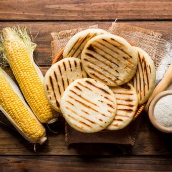

Arepas Recipe

Description
Made of ground maize dough and eaten in the northern region of South America since pre-Columbian times.
is notable seen in the cuisine of Colombia and Venezuela,
but also present in the cuisines of Bolivia and other countries.
It is served with accompaniments such as cheese, various meats, chicken, avocado,
or diablito (deviled ham spread).
Ingredients
approximately 8 arepas
- 1/2 Kg of arepa flour
- one cup of water
- one tablespoon of salt
- one table poon of corn oil
- (optional) one egg
Steps
- stir in bowl the cup of warm water
- add tablespoon of salt
- add tablespoon of corn oil
- (optional) add one egg
- mix it all together
- while mixing add genlte the corn flour
- reach the consistency where you can take 1/8 of the dough and roll it into a ball with your hands
- gently flatten the flour ball into a plate shape
- place the crushed flour in a pan over low heat
- cook for 5 minutes on both sides
Home